JULES users background guide
This aims to explain the importance of:
-
Pre-requisites
- Have requested for access to JULES from the jules-lsm.github.io JULES access request page.
- Have therefore got a Met Office Science Repository Service account and can access JULES MOSRS webpages.
- Have Rose, Cylc, FCM, keywords set up on the machine you are working on or are using the Virtual Machine (VM). GitHub VM webpages and the guidance from the JULES MOSRS web pages.
- Completed the Rose User Guide.
How to use the tutorial
This tutorial has been designed to be used as a teach yourself guide to JULES-Rose.
Ideally the tutorial would be used in the following order:
- Users tutorial and practical's , pre-quiz section - this can be considered the starting point.
- Pre-course Quiz - a quiz to help you consider how you view your present understanding.
- Users tutorial and practical's , post-quiz section - background, basic principles and some best working practices, introducing FCM, Rose, Cylc, rose-stem etc.
- Users Quiz testing your learning from the Users course.
- Developer tutorial and practical's - this section is intended to provide the developer users information on using JULES-Rose.
- Developer Quiz testing your learning from the developer course.
- Developer Advanced tutorial and practical's this section is intended for developer advanced uses of JULES-Rose and covers higher level development of code and suites.
- Developer Advanced Quiz testing your learning from the developer advanced quiz.
Background of JULES
What is JULES?
Why use JULES?
Can you think of a scenario when you version control would be advantageous in your current job/activity? Describe it.
Describe how you share work now with colleagues, could this be improved? How?
Background of Rose (in fact Cylc)
- All the files are text files therefore you can search them using
grep - There are lots of Graphical User Interfaces (GUI's) to help make the user experience better and it easier to make changes and run suites.
- Easy to add/remove/change: namelists, values etc
- Can you think of any other things that it may or could be useful to have Rose make developing code and running suites (models/simulations) easier?
What is Cylc?
What is Rose?
Why use Rose/Cylc?
Who uses Rose/Cylc?
Bureau of Meteorology, Australia
NIWA, NZ
Indian Met Service
Polish Met Service
CSIRO, Australia
ARC Centre of Excellence for Climate Systems Science, Australia
SAWS, South Africa
Korean Met Service, South Korea
Singapore Met Service
NCAS Computational Modelling Services, UK
557th, American Air Force
Exeter University, Astrophysics Dept. Exo-planets.
...the JULES community, on JASMIN, MONSooN, Virtual Machine (VM) and at their location.
What are the advantages to using Rose/Cylc?
Background of MOSRS
Why was MOSRS set up?
Who uses MOSRS?
Why should I use MOSRS?
Subversion
- It is an incremental change tracking system.
- We can explore the changes at each change and recall a version using its revision number.
- It takes snapshots of the directory tree vs time and records only the incremental changes.
- A working copy, which is in fact, a local copy of a particular version of the repository is available for users to freely work on. Note managing the version control of the working copy and communicating changes is the responsibility of the user.
- Using copy-modify-merge allows each user of the repository to have their own personal working copy and they can work simultaneously and independently to modify their personal copies which can then be merged together later. Note it is the humans' responsibility to merge the files correctly and resolve any conflicts by manually. This may mean choosing the correct file after discussions with any others editing the repository.
- Each change committed to the repository creates a new state of the filesystem tree (snapshot). This is called a revision number.
- The revision number is applied to the entire repository tree and not individual files and is therefore also known as the Global Revision Number. For example: at revision number N then a file may be the same as it was at revision number M but a different file was changed between the two revisions.
- share work and encourage collaboration,
- track the progression and incremental changes to versions/revisions of work,
- allow multiple flavours of the some work to investigate the impact of a change,
- traceability of work, for example what version of the work was used and when,
- to revert a change,
- branch from a version,
- merge in changes
- and so much more.
- It is recommended that you use
FCM, which is a wrapper to Subversion, it has some additional user friendly functionality.
What is Subversion?
Key Features of Subversion:
Why use Subversion?
How can I use Subversion?
JULES Rose suites
What are JULES Rose suites?
JULES Rose stem
What is JULES Rose stem?
A supported site is one that has a site specific configuration as part of the code repository.
Practical's
- They are shorter and easier to remember.
- If the repository needs to be moved then only the keyword definitions need
to be updated (although any working copies you have will still need to be
relocated by issuing a
fcm switch --relocatecommand). - st column - added/deleted/changed
Below is the list of the statuses, what do you think they could mean?' ' 'A' 'C' 'D' 'I' 'M' 'R' 'X' '?' '!' '~'' ' no modifications - there have been no changes to the file or directory when compared to the committed/checked-in repository version. 'A' Added - A file or directory has been add to the repository, generally no action needs to be taken. 'C' Conflicted - There are conflicts. These must be resolved before the changes can be committed to the repository. This is covered later. 'D' Deleted - A file or directory has been deleted from the repository, generally no action needs to be taken. 'I' Ignored - This item is ignored by then repository, it has been assigned the ignore flag, using the svn:ignore property. For Example: fcm propset svn:ignore "<FILENAME>" . 'M' Modified - A file or directory has been modified compared to the committed/checked-in repository version. 'R' Replaced - A file or directory has been replaced in your working copy. This means the file was scheduled for deletion, and then a new file with the same name was scheduled for addition in its place. Replaced itemscan lead to complications. 'X' an unversioned directory created by an externals definition - This is a marker as with 'I'. '?' item is not under version control - This may be an item that you want to add to the repository. You do not have to, you may want to keep it outside of the repository because it is big or always changing. However, remember that without adding it if the repository is checked out then the check out will not include this item. '!' item is missing (removed by non-svn command) or incomplete - this item may have been deleted by a non-FCM command, you can solve this by using fcm rm -c <FILE/DIRNAME> '~' item is versioned as one kind of object (file, directory, link), but has been replaced by a different kind of object. -For information on the other columns please refer to the FCM tutorial.
In the following practicals we will be using the FCM commands.
- practice some FCM commands,
- run the rose-stem (the test suite/battery),
- familiarise ourselves with some of the Rose and Cylc GUI's,
- understand and use the basic features in Trac and Tickets
- Create a directory at
~/jules/vn4p8 - Checkout the trunk at vn4.8 (or the latest release)
- The square coloured blocks - theses are the current states of the tasks
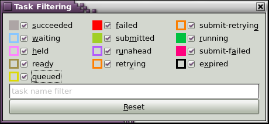 - If there is an "F" inside the square blocks - this denotes that it is part of a family of tasks, these can be considers as a common group.
- When a task has run you can look at its standard output via the
GUI by right clicking on the task name.
For example, fcm_make:
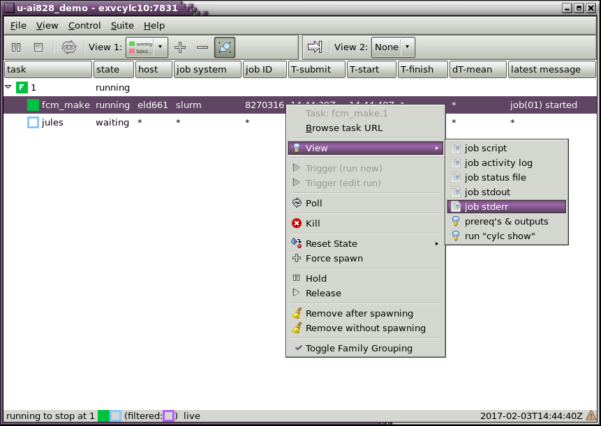
Then you can look at the standard out, err and interact with the task. - We can pause or stop the suite using the buttons at the top left
of the gcylc GUI or by selecting the
Controltab
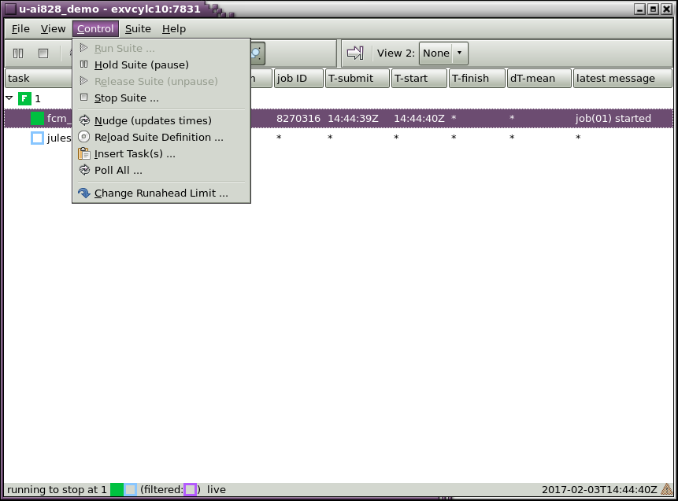
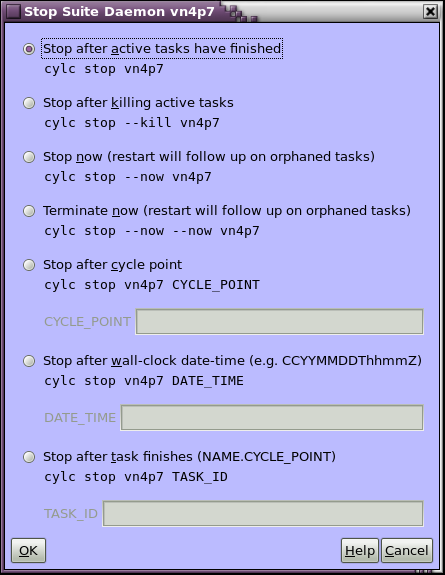
Note in the last image in the top taskbar it says:Stop Suite Daemon vn4p8this means that this panel can be used to stop the suite at the location it is running using the suite daemon. Which is the computer program that runs as a background process.
There are many other functions that we will learn about through the
tutorial but these are the basics.
- 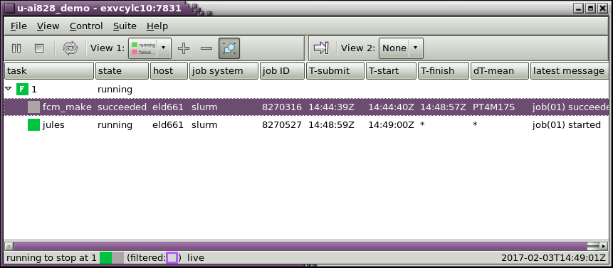
- How can you find the error of a task?
- In the image above in 5. What is the state of the fcm_make_meto, what two ways do you know from the GUI?
- What two ways could you pause a suite?
- Why do you think that you may want to kill a suite and how would you do so?
- How can you find the error of a task? Right click on the task, select 'View', select 'job stderr'.
- In the image above in 5. What is the state of the fcm_makek, what two ways do you know from the GUI? succeeded, it is a grey square and the 'state' column say 'succeeded'.
- What two ways could you pause a suite? Pause button on the top left or 'Control' and select 'Hold Suite (pause)'
- Why do you think that you may want to kill a suite and how would you do so? There are mainly reasons, for example it failed and you need to fix the error. 'Control' tab, select 'Stop Suite', select 'Stop after killing active tasks'
- What does the filled gray square represent?
- What does the hollow purple square represent?
- What does the hollow blue square represent?
- What does the filled green square represent?
- What does the filled red square represent?
- What date was the suite last active, from the image.
- What information would double clicking on the warning triangle provide?
- What information would you get by hovering over a coloured square?
- What does the filled grey square represent? Succeeded tasks.
- What does the hollow purple square represent? Filtered tasks.
- What does the hollow blue square represent? Waiting tasks.
- What does the filled green square represent? Running tasks.
- What does the filled red square represent? Failed tasks.
- What date was the suite last active, from the image. 2016-05-20 at 14 hrs, 13 mins and 20 seconds in GMT+1 (BST).
- What information would double clicking on the warning triangle provide? err log for the log of the suite.
- What information would you get by hovering over a coloured square? How many of each tasks for each state there is.
- What three ways can you find the job stderr for a task?
- In the gcylc GUI what does a
Finside a coloured square mean? - What two things in the gcylc GUI inform you of the state of a task?
- How could you Stop a suite (all three ways)?
- How could you open a closed gcylc GUI (both ways)?
- How could you open Rose Bush from command line?
- In Rose Bush how can you see only the Failed tasks?
- What three ways can you find the job stderr for a task? In the gcylc GUI by right clicking on the task, select View, select job stderr. In Rose Bush. In the cylc-run/<SUITE_NAME>/log/job/1/<TASK_NAME>/NN directory.
- In the gcylc GUI what does a
Finside a coloured square mean?
It is a family of tasks.
- What two things in the gcylc GUI inform you of the state of a task? The colour of the square. The state column.
- How could you Stop a suite (all three ways)? Stop button at the top left. Right click a task and Stop (but this would only stop that task). Select Control and then Stop.
- How could you open a closed gcylc GUI (both ways)? cylc gscan and then double click on the desired suite id. rose sgc --name=SUITE_ID
- How could you open Rose Bush from command line? rose slv
- In Rose Bush how can you see only the Failed tasks? Display Options, Select by Job Status, failed.
-
Now we know some of the more regularly used functionality of the gcylc GUI we should let our rose-stem suite run.
Release the suite using the
Playbutton on the top left of the gcylc GUI.Have a look around the gcylc GUI and find some of the functions discussed above, but DO NOT Stop the suite as we want to prove that the JULES trunk code is successful!
-
Bring up
Rose Bushand have a look around, note you can access Rose Bush while the suite is running. - It is a flexible issue tracker.
- It provides a roadmap feature for managing project release, including a record of all changes included in the release.
- It has a built-in wiki.
- It lets us use a browser for viewing the repositories, where we can browse the code and files, examine revision logs and changesets.
- It provides a timeline view with summaries of changes to.
- It provides a flexible ticket workflow, supporting the review process.
- RSS Feeds - you can sign up for RSS feeds to receive feeds on a ticket or a owner
- You can add and remove Filters, try removing the Owner and adding a Milestone
- You can add and remove Columns, try adding Owner and remove Priority
- The
rose-suite.infofile contains information on the suite that is searchable in Rosie Go (see below). - The
rose-suite.confis where you should find all of the variables that you may have to change. - The
suite.rcis the Runtime Configuration file for the suite. It contains thegraphsection for the running order of the tasks in the suite. The task names and the environment variables that they need which may be from therose-suite.conf. Directives, Submission Methods, etc. In this file there is not just Python code but Jinja2, a templating language in Python, don't worry we will discuss it when we need to make changes. - The
app/directory contains the Applications, for examplefcm_makeand thejulesapp's with theirrose-app.confconfigurations files. - The
meta/directory contains the metadata for the suite, which helps you to understand the values and parameters in the suite. - Command line
rosie checkout u-ai828 # or u-ai829 (VM) or u-ai843 (JASMIN) or u-al388 (MONSooN) cd /USER/roses/u-ai828 # or u-ai829 or u-ai843 or u-al388 rose edit
- Rosie Go GUI - double click on the suite of interest.
- Rosie Go GUI - right click on the suite of interest
and select
Edit Suite - Command line
rosie checkout u-ai828 # or u-ai829 (VM) or u-ai843 (JASMIN) or u-al388 (MONSooN) cd /USER/roses/u-ai828 # or u-ai829 or u-ai843 or u-al388 rose suite-run
- Rosie Go GUI - click on the suite that you want to run,
then click on the "Play" button in the top of the GUI,
its says
Run Suitewhen you hover over it. - Rose Edit GUI - click on the "Play" button in the top
left of the GUI, its says
Run Suitewhen you hover over it. - How can you find out how long each task took to run?
- How long did the fcm_make task take?
- How long did the jules task take?
- How can you find out how long each task took to run? Rose Bush
- How long did the fcm_make task take? About 2 mins
- How long did the jules task take? About 15 seconds
- command line?
- Rosie Go
- At command line? rosie copy u-ai828 #or u-ai829 (VM) or u-ai843 (JASMIN) or u-al388 (MONSooN) # This open the rose-suite.info file in a text editor, change the description # to include the soil type you will change.
- Via Rosie Go rosie go & # search u-ai828/u-ai829/u-ai843/u-al388 # right click, select copy, select FORWARD, change the description to include # the soil type you will change, click OK.
- The gear-wheel icon near the variable name is clickable, with several useful functions, including taking you to the documentation.
- If you can't see the variable you want, try right-clicking to add latent variable. To alter the soil ancillaries, you can enter the data into the Rose Edit GUI manually.
- Change the output period to be daily (86400 seconds).
In the
app/jules/rose-app.conffile change[namelist:jules_output_profile(1)] output_period=86400
- Ensure that gridbox mean sensible heat flux, latent heat flux and surface temperature are output.
ftl_gb Gridbox surface sensible heat flux (W m-2) latent_heat Gridbox surface latent heat flux (W m-2) tstar_gb Gridbox surface temperature (K)
Check these variables are present in the
app/jules/rose-app.conffile in the[namelist:jules_output_profile(1)]section and if not add them. - Change the output directory name, create the relevant directory, change the run ID.
In the
app/jules/rose-app.conffile below the[command] default=rose-jules-run
section add:[file:./sand/output] mode=mkdir source=
and change:[namelist:jules_output] output_dir='./sand/output' run_id='sand'
- Copy your recent suite, <SUITE_ID> using
rosie copy <SUITE_ID>and get a new suite and new suite ID for your changes and commit it. - Create a branch from the current suite and the use
fcm sw <BRANCH_NAME>.
Remember to always:- check where you are on the repository (the trunk or
a branch) with the fcm command
fcm infoor by using rosie go - check the status of the current version of the suite that you are working on
- COMMIT any changes and to the repository
- list the branches that are available for that suite
rosie copy u-ai828 # u-ai829 (VM) or u-ai843 (JASMIN) or u-al388 (MONSooN) OR (my preferred method, but it is a personal preference) cd /USER/roses/u-ai828 # for where you are in the repository, a branch or the trunk fcm info # OR rosie go rosie go & 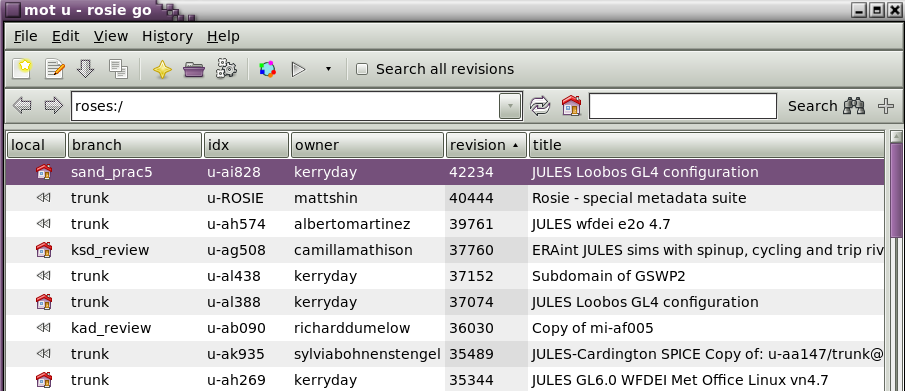 # from this example we can see that the local copy of the suite-id u-ai828 is not the trunk but the branch "sand_prac5"
# check the status to see if there is anything to commit fcm st # commit uncommitted changes fcm ci # list all the current branches for this suite on the repository fcm bls # create a branch called clay fcm bc clay #for branch-create # switch to the clay branch fcm sw clay #for switch branch #or fcm sw https://code.metoffice.gov.uk/svn/roses-u/a/i/8/2/8/clay
Run your new soil type using:
rose suite-run --new --name=<SOIL_TYPE>_<SUITE_ID>
To switch back to the original usefcm sw trunkBUT first always remember to commit your changes back to the branch usingfcm cibefore switching. Note, you can check your branch names usingfcm bls
The first method is the simplest, but I personally prefer the second as it groups similar suites together with one id.
An examples of how the Rosie Repository Trac pages look follow:
u-ai828
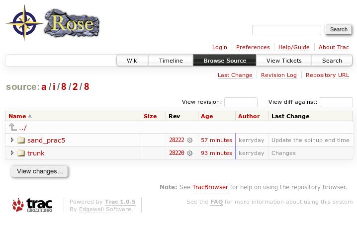Select sand_prac5
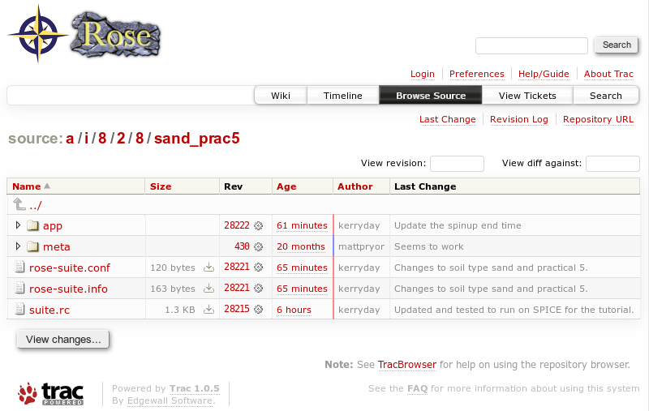Click on the "Revision Log"
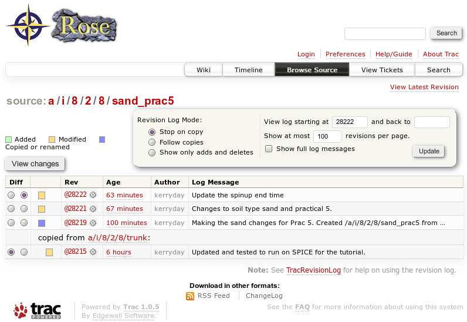Click on "View Changes" and then View Differences "side by side" and update
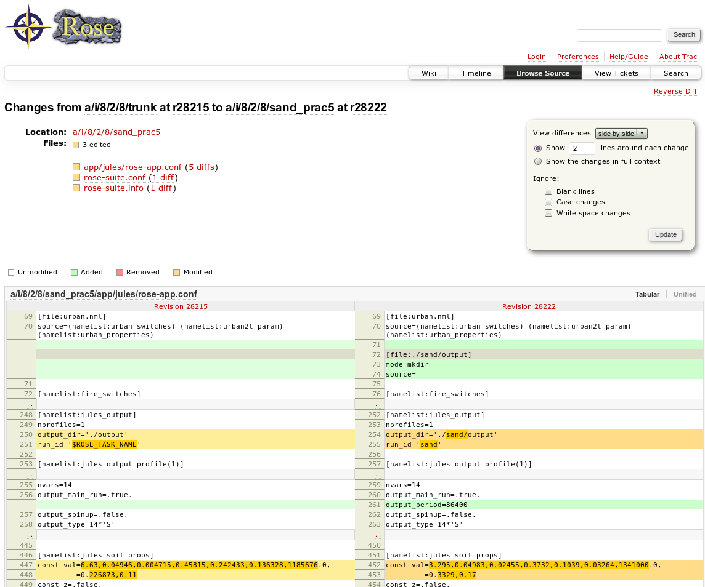Questions
- What effect do the different soil types have on the model fluxes and the model state?
- Is there any seasonal variation in the results? Is this what you expected?
- How important is getting the right soil type for the evolution of the model?
Note: The differences may only be small between the output for the different suite setups.
When plotting the differences the small difference may not be observable by eye with some plotting packages. For example it has been noted that ncview does not appear to display differences clearly by eye but MatLab and Iris display the difference.Iris is an open-source Python library for Meteorology and Climatology.
- We need to edit the
rose-suite.conffile to include a list of the different radiation models. For ExampleCANRADMOD=['canradmod_1', 'canradmod_2', 'canradmod_3', 'canradmod_4', 'canradmod_5', 'canradmod_6']
- We need to change the
graphsection in thesuite.rcto loop through the list in therose-suite.conf. For Examplegraph = """ {% for crm in CANRADMOD %} fcm_make => jules_{{crm}} {% endfor %} """This looks like Python but is actually Jinja2, more on this in the Developer tutorial. - We need to change the
julestask in thesuite.rcto loop through the list in therose-suite.confand for it to use the optional configuration file with the two line change. For Example{% for crm in CANRADMOD %} [[jules_{{crm}}]] inherit = None, SPICE script = "mkdir -p output ; rose task-run --path= --path=share/fcm_make/build/bin --app-key=jules --opt-conf-key={{crm}}" ... ... --ntasks={{ OMP_NUM_THREADS * MPI_NUM_TASKS}} {% endfor %}{% for crm in CANRADMOD %} [[jules_{{crm}}]] inherit = None, SPICE script = "mkdir -p output ; rose task-run --path= --path=share/fcm_make/build/bin --app-key=jules --opt-conf-key={{crm}}" [[[job]]] execution time limit = {{ WALLTIME }} [[[remote]]] host = {{ ROSE_ORIG_HOST }} [[[environment]]] JULES_PATH = {{ JULES_PATH }} MPI_NUM_TASKS = {{ MPI_NUM_TASKS }} OMP_NUM_THREADS = {{ OMP_NUM_THREADS }} NPROC = {{ MPI_NUM_TASKS }} [[[directives]]] # MPI_NUM_TASKS * OMP_NUM_THREADS --ntasks={{ OMP_NUM_THREADS * MPI_NUM_TASKS}} {% endfor %}
The optional configuration file is selected by the suite using the--opt-conf-key={{crm}}syntax/code, also Jinja2.Add optional configurations files to the JULES-Rose suite
- We need to add an
optfolder to the jules app.- We need to populate the
SUITE_ID/app/jules/opt/with the 6 differentrose-app-???.conffiles. For Examplerose-app-canradmod_1.conf
[namelist:jules_vegetation] can_rad_mod=1
The diff from the Trac pages of the changes made to the suite.
We need to save our changes before running the suite.
How can we check what our changes are and then commit them to the repository?
fcm st ? app/jules/opt M rose-suite.conf M suite.rc fcm add app/jules/opt A app/jules/opt A app/jules/opt/rose-app-canradmod_1.conf A app/jules/opt/rose-app-canradmod_2.conf A app/jules/opt/rose-app-canradmod_3.conf A app/jules/opt/rose-app-canradmod_4.conf A app/jules/opt/rose-app-canradmod_5.conf A app/jules/opt/rose-app-canradmod_6.conf fcm st A app/jules/opt A app/jules/opt/rose-app-canradmod_1.conf A app/jules/opt/rose-app-canradmod_2.conf A app/jules/opt/rose-app-canradmod_3.conf A app/jules/opt/rose-app-canradmod_4.conf A app/jules/opt/rose-app-canradmod_5.conf A app/jules/opt/rose-app-canradmod_6.conf M rose-suite.conf M suite.rc fcm ci # Add your commit message, save, close and "y" to commit [info] vim: starting commit message editor... Change summary: -------------------------------------------------------------------------------- [Root : https://code.metoffice.gov.uk/svn/roses-u] [Project: a/i/8/2/8] [Branch : rad_models_prac6] [Sub-dir: ] A app/jules/opt A app/jules/opt/rose-app-canradmod_1.conf A app/jules/opt/rose-app-canradmod_2.conf A app/jules/opt/rose-app-canradmod_3.conf A app/jules/opt/rose-app-canradmod_4.conf A app/jules/opt/rose-app-canradmod_5.conf A app/jules/opt/rose-app-canradmod_6.conf M rose-suite.conf M suite.rc -------------------------------------------------------------------------------- Commit message is as follows: -------------------------------------------------------------------------------- Added looping for canradmod's. -------------------------------------------------------------------------------- Would you like to commit this change? Enter "y" or "n" (or just pressfor "n"): y Adding app/jules/opt Adding app/jules/opt/rose-app-canradmod_1.conf Adding app/jules/opt/rose-app-canradmod_2.conf Adding app/jules/opt/rose-app-canradmod_3.conf Adding app/jules/opt/rose-app-canradmod_4.conf Adding app/jules/opt/rose-app-canradmod_5.conf Adding app/jules/opt/rose-app-canradmod_6.conf Sending rose-suite.conf Sending suite.rc Transmitting file data ........ Committed revision 28232. Updating '.': At revision 28232
Run the suite
rose suite-run --name=canradmod6 --new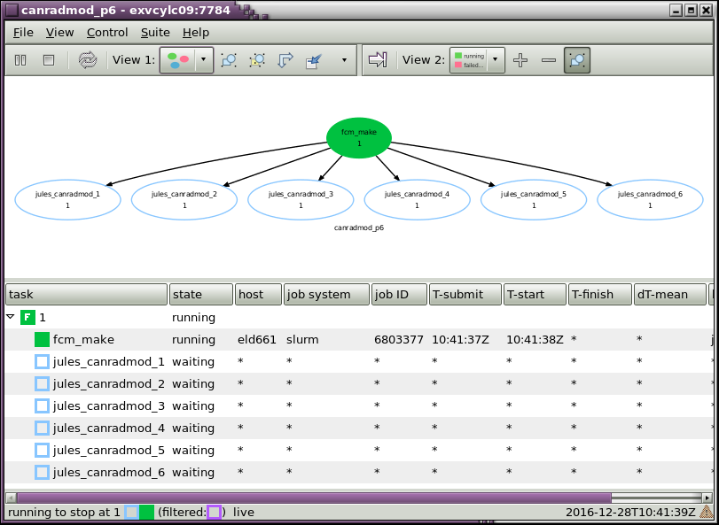
Questions
- Where is the output for each of the jules canradmod setting?
- What was the effect of changing canradmod?
- How useful was this approach of changing model settings? What types of experiments would it be useful for?
- Look at the changes via
rose editwhat is different?
- Where is the output for each of the jules canradmod setting? ls ~/cylc-run/canradmod_p6/work/1/jules_canradmod_1/output jules_canradmod_1.all.nc jules_canradmod_1.dump.19961231.82800.nc jules_canradmod_1.dump.19970101.0.nc jules_canradmod_1.dump.19971231.82800.nc
- What was the effect of changing canradmod? Changed the Gridbox total soil moisture in column.
- How useful was this approach of changing model settings? What types of experiments would it be useful for? Faster runs, multi-option runs including times as well as variables, lots.
- Look at the changes via
rose editwhat is different?
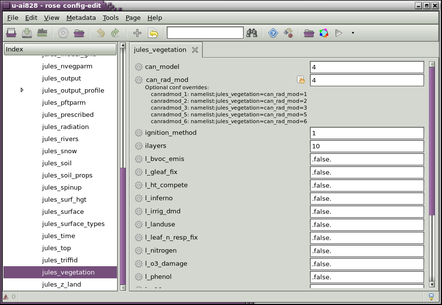
A pad of paper and a hand with a pointing finger on the paper are next to the
can_rad_mod option in the namelist.
This means that there are optional configurations, if you click on the icon
it displays the optional configurations, note there is none for canradmod_4 as
it is the same as the default option.
If you click on the icon rose edit looks like:
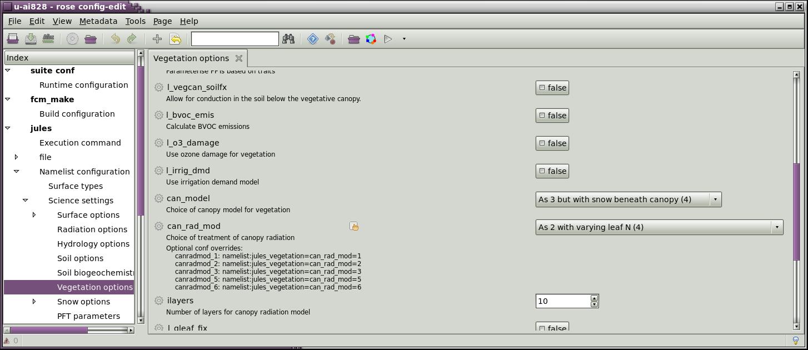
Adding plots - ONLY to be done if you have Iris installed
You may want to do some plotting of the data and you can add this to be part of your suite.
Here we will see how to do this using a Python Iris script.
# always commit your changes before sw fcm ci # switch to the trunk fcm sw trunk # Create a new branch for the plotting suite fcm bc canradmod_plots # switch to the new plotting branch fcm sw canradmod_plots # merge in the canradmod branch ready for the plotting fcm merge canradmod # commit the changes fcm ci # now we can add the plotting.
Changes that need to be made are:
- suite.rc, graphing, task added, Family added
- Add bin/ directory with Python script, make sure it is executable
Below is the Python script that was written to run with the suite.
#!/usr/bin/env python2.7 ''' Script plot_crm.py to plot the 6 different canopy radiation model options. Created by Kerry Smout-Day 28/12/2016 ''' import matplotlib as mlp mlp.use('Agg') import iris import iris.quickplot as qplt import matplotlib.pyplot as plt import argparse import os iris.FUTURE.netcdf_promote=True curr_var=["Gridbox surface latent heat flux", "Gridbox surface sensible heat flux", "Gridbox total soil moisture in column", "Gridbox surface temperature", "Gridbox soil moisture availability factor (beta)"] filename=["latent_heat_flux_tseries.png", "sensible_heat_flux_tseries.png", "tot_soil_moisture_tseries.png", "surface_temperature_tseries.png", "soil_moisture_availability_factor_tseries.png"] def load_and_squeeze(filename): """Loads files into iris cubelists and removes singleton dimensions""" clist = iris.load(filename) squeezed_clist = iris.cube.CubeList() for cube in clist: squeezed_clist.append(iris.util.squeeze(cube)) return squeezed_clist def data_retrieve(): """Adds the data to a dictionary for handling and plotting.""" suite_path = os.path.expanduser('~/cylc-run/') files = {} for crm in CANRADMOD: filecalled = "jules_" + crm + ".all.nc" foldername = "work/1/jules_" + crm file_path = os.path.join(suite_path, CYLC_SUITE_NAME, foldername, "output/", filecalled) files[crm] = load_and_squeeze(file_path) plot_data(files, curr_var, filename) def plot_data(files, curr_var, filename): """Plots and saves the data.""" x=0 for var in curr_var: for crm in CANRADMOD: qplt.plot((files[crm]).extract(var)[0], label = crm) plt.legend(loc='best') savefile = filename[x] plt.savefig(savefile) x += 1 plt.close() if __name__ == '__main__': """Takes the arguments from the suite for us in the analysis.""" # Initialise the command line parser parser = argparse.ArgumentParser() parser.add_argument('--suite', help='suite name', required=True) # canradmod is a list of strings of 1 or more arguments. parser.add_argument('--canradmod', nargs='+', type=str, help='different models', required=True) # #Parser the command line. args = parser.parse_args() CYLC_SUITE_NAME = args.suite CANRADMOD = args.canradmod data_retrieve()Other changes have been made to the following files:
rose-suite.conf
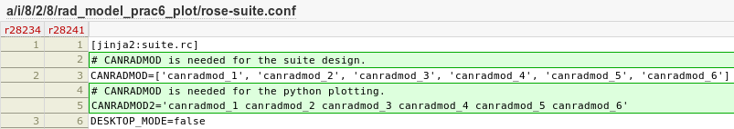
suite.rc
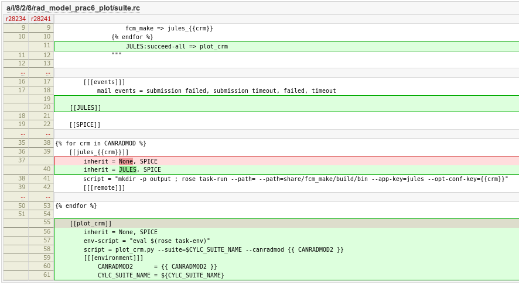
Here CANRADMOD" has been added so that the list in the correct format for the Python plotting.
Here the family
[[JULES]]has been added and then used in thegraphsection for the dependency of thejulestasks must all succeed before the plotting taskplot_crmcan run. Alljulestask now inherit theJULESfamily for this to happen. A new task of[[plot_crm]]has been added, it runs the scriptplot_crm.pywith the argumentsCYLC_SUITE_NAMEa variable assigned at run time, it will use the optional name if provided andCANRADMOD2, the list of models in the required format.The revision Log of the changes after adding the different models is provided in the link.
Some new things from running this suite in the gcylc GUI
The image below shows two
Viewsthe "Graph" view in the top section of the gcylc GUI, View 1, and the "Text" view in the bottom section as View 2.One other thing to notice in the Graph View is that the JULES family is grouped together, to un-group it select the second button after the Views button to expand the family.
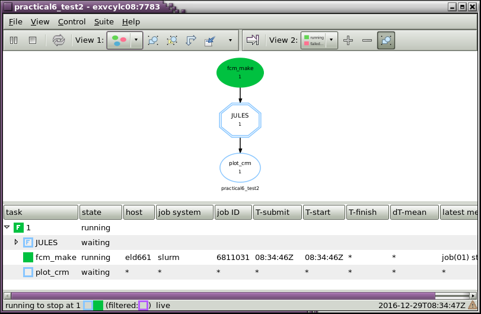
The image below show the JULES family expanded. We can see all of the dependencies clearly.
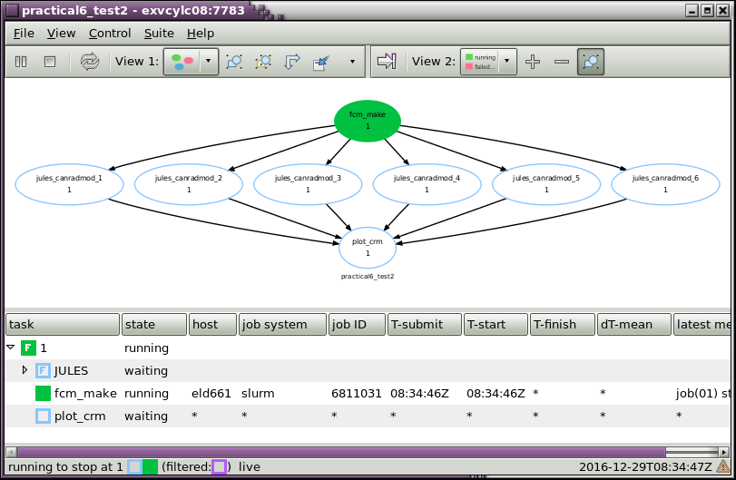
In the image below, what are the states of each task?
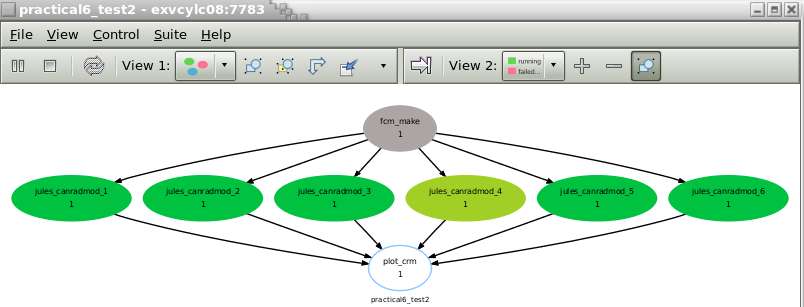
fcm_make - succeeded jules_canradmod_1/2/3/5/6 - running jules_canradmod_4 - submitted plot_crm - waiting
Now try to create the suite and run the suite.
Where are the plots that are created? (Clue where the output is.)/USER/cylc-run/practical6_test2/work/1/plot_crm/ latent_heat_flux_tseries.png surface_temperature_tseries.png sensible_heat_flux_tseries.png tot_soil_moisture_tseries.png soil_moisture_availability_factor_tseries.png 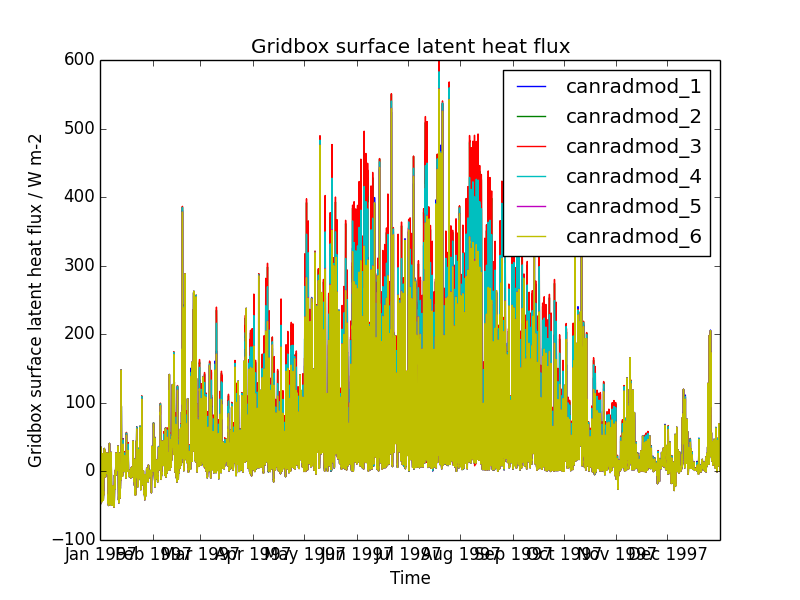 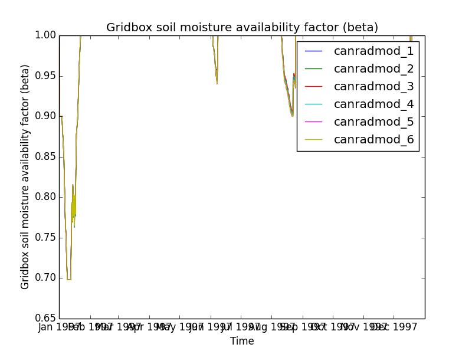
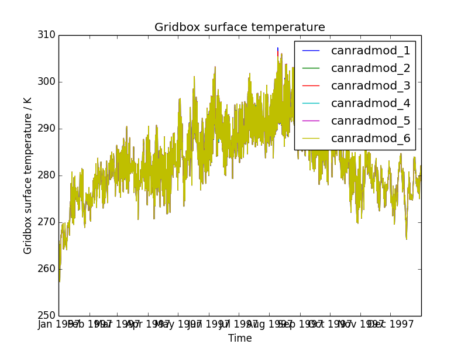
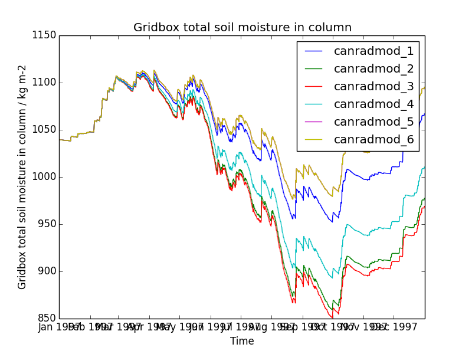
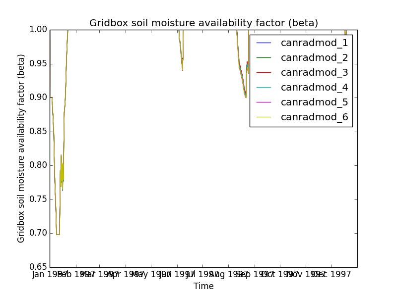
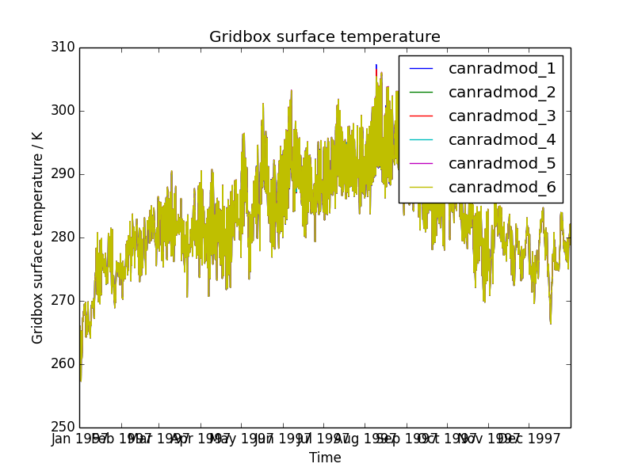
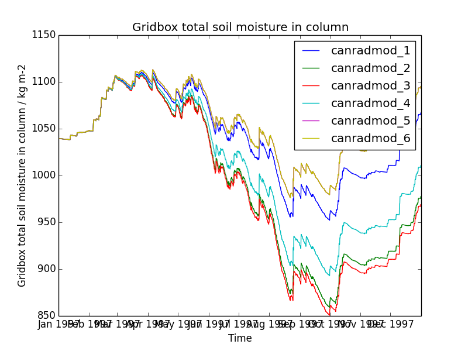
Note ancillary files are not covered in the tutorials. A new ANcillary Tools and Suites system, ANTS, is being developed at present by the UK Met Office, please see the information on ANTS.
Congratulations you have completed the Users Tutorial!
Now lets do the User Quiz to highlight your learning.
© British Crown Copyright 2006-17 Met Office.
This document is released under the British Open Government Licence.
- We need to add an
In Practical 6 we will cover:
Changing canopy the radiation model configurations
Changing the JULES-Rose suite design to run JULES for multiple configurations
Add optional configurations files to the JULES-Rose suite
Run the suite
Questions
Adding plots
In Practical 5 we copied the suite three times, sand, loam and clay. Each had its own suite id and we ran each suite to get the results. However, this is not the most effective way of running the suite to get the data as each time it run the
fcm_maketask.
This time we want to run the suite for six different model configurations. Each is only a one line change, it would be a waste of resource to have six different suites and run each so we will used the functionality of Rose to make this more efficient.
Cylc/Rose will schedule the jules tasks to run simultaneously which will reduce the running time of your suite.
Changing canopy the radiation model configurations
Information on the options in JULES for calculating the effect of the vegetation canopy on radiation is in the documentation.
In summary, in thejulesapplication configuration fileSUITE_ID/app/jules/rose-app.confthe namelistjules_vegetationhas an optioncan_rad_mod.What is the default set to in
u-ai828/u-ai829/u-ai843/u-al388? What two ways can you find the value?[namelist:jules_vegetation] can_rad_mod=4 command line, view the file u-ai828/app/jules/rose-app.conf OR rose edit First check the metadata is pointing to the correct location (change to point to your copy of the code) e.g. for jules ~kerryday/JULES/vn4p8/trunk/rose-metadata/jules-standalone/vn4.8 for fcm_make ~kerryday/JULES/vn4p8/trunk/rose-metadata/jules-fcm-make/vn4.8 Refresh the metadata using the Metadata tab at the top of rose edit. Then: -> jules -> Namelist configuration -> Sciecne settings -> Vegetation optionscan_rad_mod(about half way down). REMEMBER to expand your rose edit window to see all of the options. 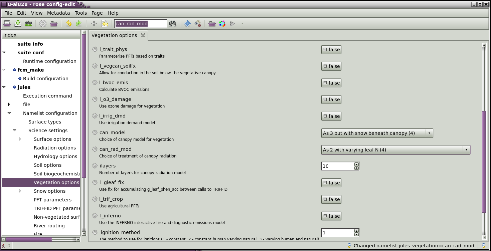
Changing the JULES-Rose suite design to run JULES for multiple configurations
To change the suite design we have to edit the text files in the suite using a text editor.
First we must either copy
u-ai828/u-ai829/u-ai843/u-al388or create a branch of eitheru-ai828/u-ai829/u-ai843/u-al388and then switch to it.rosie copy u-ai828 # u-ai829 (VM) or u-ai843 (JASMIN) or u-al388 (MONSooN) OR (my preferred method, but it is a personal preference) cd /USER/roses/u-ai828 fcm bc canranmod fcm sw canranmod #or fcm sw https://code.metoffice.gov.uk/svn/roses-u/a/i/8/2/8/canradmod
Now we can make changes to the suite.
- check where you are on the repository (the trunk or
a branch) with the fcm command
Practical 1 will cover:
Checking your setup.
Lets firstly check some setup:
rosie hello --prefix=u
# this should return something like this:
https://code.metoffice.gov.uk/rosie/u/hello: Hello kerryday
rose --version
cylc --version
fcm --version
# these should return something like this:
Rose 2017.02.0 (/net/home/.../rose-2017.02.0)
7.3.0
FCM 2017.02.0 (/net/home/.../fcm-2017.02.0)
# hopefully they are the latest versions of the systems.
fcm keyword-print
# or short-hand: fcm kp
# this should return all of the keywords that you and the site have setup, a sample of mine are:
location{primary}[jules.x] = https://code.metoffice.gov.uk/svn/jules/main
location{primary}[jules_doc.x] = https://code.metoffice.gov.uk/svn/jules/doc
What are Keywords and why do we need them setup?
Keywords can be considered to be like short-hand or short-cuts to our full URL's.
Keywords can be defined in the FCM keyword configuration file (i.e.
$FCM/etc/fcm/keyword.cfg and
$HOME/.metomi/fcm/keyword.cfg).
For example in our .cfg file in our $HOME
directory we can define a keyword as follows:
location{primary}[jules.x] = https://code.metoffice.gov.uk/svn/jules/main
now we can abbreviate the URL as in the following examples:
# fcm ls https://code.metoffice.gov.uk/svn/jules/main
fcm ls fcm:jules.x
There are two main advantages for using URL keywords, what do you think they
could be?
Practical 2 will cover:
Basic FCM commands that you will need for the tutorial and version control.
There are some very basic FCM commands that we need to know to work effectively.
fcm add
fcm bc
fcm bd
fcm bls
fcm cf
fcm ci
fcm co
fcm info
fcm merge
fcm rm
fcm revert
fcm st
fcm sw
fcm up
Do you know what any of them do?
fcm add - for adding a file or directory to the repository
fcm bc - for creating a branch, can also use 'fcm branch-create'
fcm bd - for deleting a branch, can also use 'fcm branch-delete'
fcm bls - for listing the branches associated with the repository, as default
this is only your branches, the '-a' option to list all other branches
the '--user=kerryday' to list user kerryday's branches
fcm cf - for resolving text conflicts after a merge
fcm ci - for checking in a change to the repository
fcm co - for checking out a from the repository
fcm info - for getting info on the directory that you are working in
fcm merge - for merging in a branch
fcm rm - for removing a file or directory from the repository, option -c to
force it to remove the file from the repository even if it is missing
from the directory
fcm revert - for reverting a file or directory which has not been
checked in/committed to the repository yet.
fcm st - for checking the status of the repository, VERY IMPORTANT, more later
fcm sw - for switching branches, don't often done for code but great for suites
fcm up - for updating the repository
fcm
# will return the help to the screen, for example
fcm add --help
Usage:
1. fcm add --check [PATH ...]
Options:
--check, -c
Check for any files or directories reported by "svn status" as not
under version control and add them.
For other options, see output of "svn help add".
add: Put files and directories under version control, scheduling
them for addition to repository. They will be added in next commit.
usage: add PATH...
Valid options:
--targets ARG : pass contents of file ARG as additional args
-N [--non-recursive] : obsolete; try --depth=files or --depth=immediates
--depth ARG : limit operation by depth ARG ('empty', 'files',
'immediates', or 'infinity')
-q [--quiet] : print nothing, or only summary information
--force : force operation to run
--no-ignore : disregard default and svn:ignore and
svn:global-ignores property ignores
--auto-props : enable automatic properties
--no-auto-props : disable automatic properties
--parents : add developer parents
Global options_
--username ARG : specify a username ARG
--password ARG : specify a password ARG
--no-auth-cache : do not cache authentication tokens
--non-interactive : do no interactive prompting (default is to prompt
only if standard input is a terminal device)
--force-interactive : do interactive prompting even if standard input
is not a terminal device
--trust-server-cert : accept SSL server certificates from unknown
certificate authorities without prompting (but only
with '--non-interactive')
--config-dir ARG : read user configuration files from directory ARG
--config-option ARG : set user configuration option in the format:
FILE:SECTION:OPTION=[VALUE]
For example:
servers:global:http-library=serf
More on fcm st
The commandfcm st is a very powerful command and one which
should be used frequently to aid with our use of FCM.
fcm st returns the status of the local/working copy files and
directories.
Now we will look at the most common returned statuses including the meaning of them and the implications on the repository.
Information on the status of the file or directory is given in the first seven columns.
Practical 3 will cover:
Checking out the JULES code.
The gcylc GUI and helpful Rose and Cylc commands.
Using the gcylc GUI, Rose Bush and the cylc-run directory.
Using basic FCM commands.
The basics of Trac pages and Tickets.
We will now checkout the JULES code from the MOSRS repository.
This will allow us to;
Checkout the code
To checkout the trunk at the latest version/code release try the following:
We do want to run the "rose-stem" suite purely as an example of a running suite, but firstly what is the rose-stem suite and why may we want to run it in the future?
Rose-stem is a collection of tests in a suite.
It is used to test as much of the code and science as possible.
This means developers can prove that any change does not break other code and
or science and is bit compatible with the previous run checking Known Good
Output (KGO).
Rose-stem can test on different platforms and with different compliers.
Ideally all sites will have their own rose-stem tests that they run, preferably,
weekly.
# make the directory ~/jules/vn4p8 and the path that may be required.
mkdir -p ~/jules/vn4p8
# change to the directory ~/jules/vn4p8
cd ~/jules/vn4p8
# checkout the JULES code at version vn4.8 using keywords to a directory called
# trunk
fcm co fcm:jules.x_tr@vn4.8
# or checkout the JULES code at version vn4.8 using the full URL
fcm co https://code.metoffice.gov.uk/svn/jules/main/trunk@vn4.8
# move the trunk/ directory
cd trunk
We are now going to run the rose-stem tests purely as a demonstration of a JULES running with Rose.
We always need to specify a group when running rose-stem, here
we will use --group=all.
Other possible options are loobos, gswp2,
linux, xc40, tutorial,
tutorial_linux, tutorial_xc40.
If you forget the --group=... option you will get
an error like the following:
[FAIL] cylc validate -v --strict fred # return-code=1, stderr= [FAIL] 'No suite dependency graph defined.'
rose stem --group=all --new -- --hold
This will set it running but not allow it to start as we have
used the option -- --hold.
The option --new forces a completly new run to be
created.
Rose and Cylc provide many helpful Graphical User Interfaces (GUI's).
Now lets explore the GUI's.
The cylc gcylc GUI
We will now discuss the gcylc GUI functionality ready for running suites in the next practical.
The cylc gcylc GUI is the suite specific Graphical User Interface for monitoring the progress of a specific suite.
Note you can have a unique gcylc's open for different each suite.
A JULES-Rose gcylc GUI could look like this:
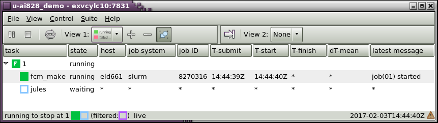Lets look at an image of a running gcylc GUI and try to understand the different aspects of it.
Key points from the gcylc GUI
Questions the on gcylc GUI
What if you do not have access to a GUI?
There is a command line equivalent, it is not as elegant:
cylc scan -c
It should produce something like this:
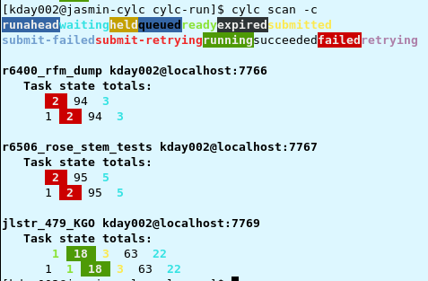
the very top line show the meaning of all of the colours that are used in the summary of the state of the suite.
Next there is the name of the suite, i.e. r6400_rfm_dump.
On the same line is the username and the location that the suite is being run, i.e. kday002 and localhost7766.
Now the Task state totals: are given.
The top line of the Task state totals shows the summary state of
the whole suite.
The second line show the summary state of the current cycle,
which for JULES is usually cycle 1.
There are no other cycles for any of the suites above.
From the jlstr_479_KGO suite summary their are
1 ready tasks,
18 running tasks,
3 submitted,
63 succeeded and
22 waiting tasks.
What if you accidently close the gcylc GUI?
You can reopen it using:
cylc gui vn4p8 #where vn4p8 is the suite id
OR
You can use the cylc gscan GUI
cylc gscan & #& background the task so you can still use your terminal
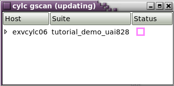
Now you can double click on the suite id of the suite that you want to open and the gcylc GUI of that will appear.
OR
You can use Rose to open the gcylc GUI
rose suite-gcontrol --name=SUITE-NAME Or the shorthand
rose sgc --name=SUITE-NAME
How else could we look at the output from the suite?
We already know that we can use the gcylc GUI to look at the job stderr/out by right click on a task and select View and then the job stderr. We may also want to look at the log file for the suite.
This can be viewed in via the gcylc GUI if there are errors. If there are errors then a orange warning triangle will appear in the bottom right hand corner of the screen.
Double clicking on it will open up an information box with any errors from the log of the suite.
Other ways of looking at information from the suite:
We can, if it is setup look at the information in a web browser.
This is known as rose bush.
At the Met Office the top level page looks like the image below.
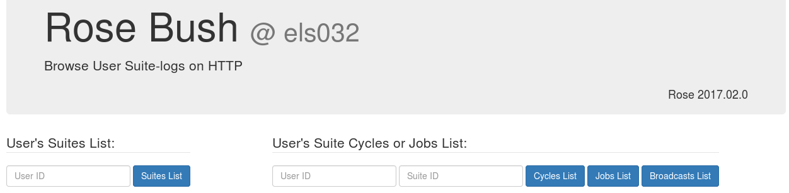At the Met Office the second level page looks like the image below. This was reached by completing the "User Id" and selecting the "Suite List" button. This then provides a list of the owners suites that they have run and or are running.
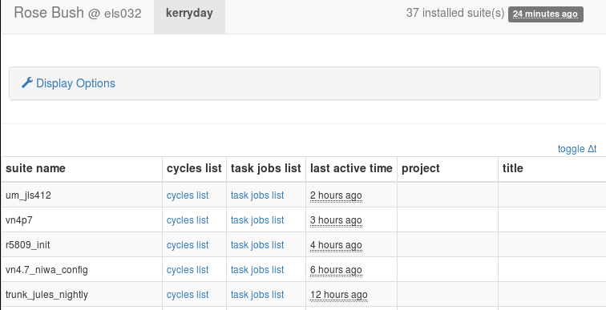At the Met Office the suite level page looks like the image below. The suite was selected by clicking on the "task jobs list" associated with the desired suite name.
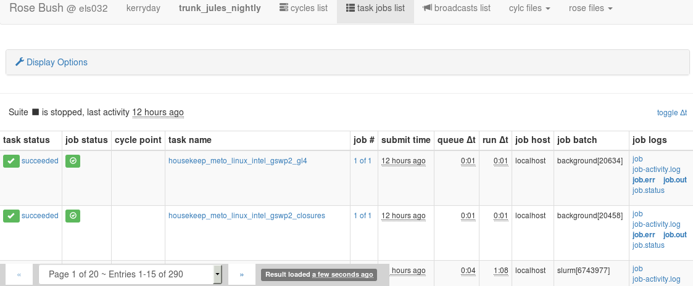On the Virtual Machine (VM) the suite level page looks like the image below.

The last two images are equivalent run on two different sites/systems.
Depending on your site setup there are different ways of accessing rose bush. As can be seen in the above two images. In an internet window if you know the path you can use that.
At command line rose bush can be invoked for a suite that you have run or is running from within the directory of the suite.
rose slv or rose suite-log --view you
can also add the option of the --name=SUITE_NAME
More on Rose Bush
The location of the log for the suite err and out which can be very helpful when debugging a suite.
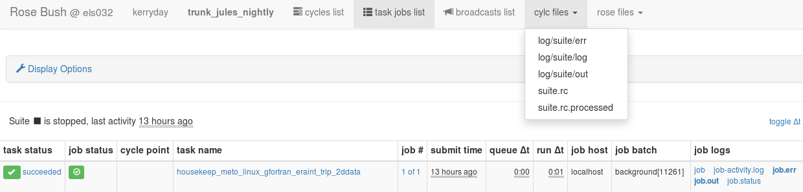The location of the log for the Rose and other files, this can be helpful.
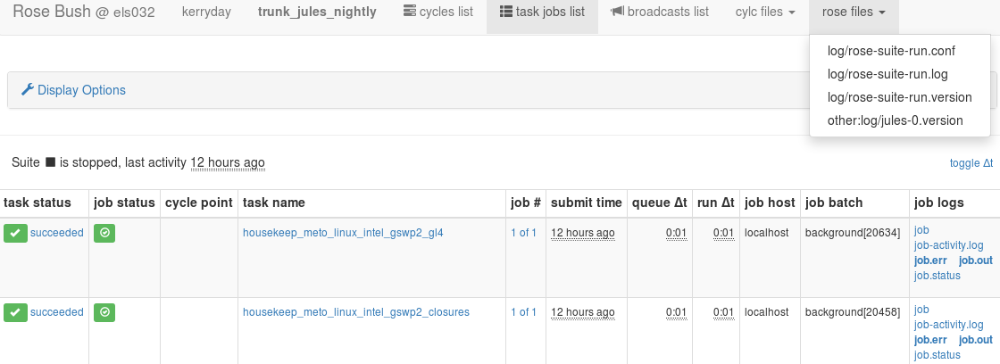Using the "Display Options" button to search for tasks by...
...name (using the Task Name Glob) which means you can search for
part of a name, for example *linux*
...specifying the number of Entries/Page is helpful for both very
large suites, especially when combined with other options
...the Sort Order drop down is a useful option for example looking
at the first failed task
...you can combine options
...remember to use the "update" button to apply your requested
Display Options.
The "Display Options" also includes a very useful function of being able to look at jobs via their task status.
This can be done by selecting the Job Status drop down box.
You can then search by the status of the task.
For example searching for all Failed tasks is often very helpful.
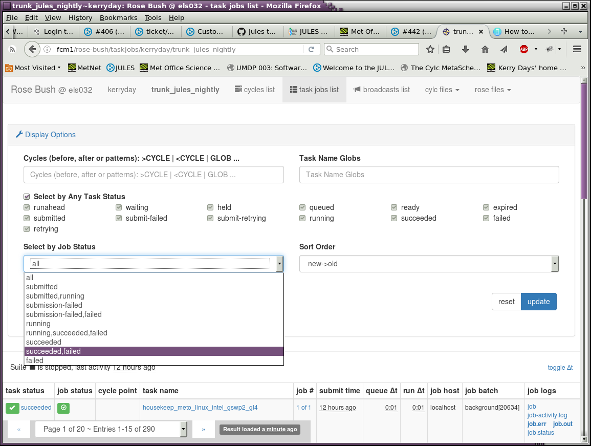Cycles List
The Cycles List tab at the top is useful for looking at the suite dependant on its cycle.
As you can see below this functionality is not utilised for rose-stem suites.
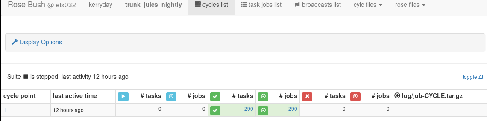The cylc-run directory
A third place that we can look at the logs for a suite is
in the cylc-run directory.
This directory is created by Cylc at the time that the run is started, it is populated by Cylc.
The cylc-run directory is the location where the information, logs and data are sent to.
The directory structure often looks like this:
app include suite.rc
bin log suite.rc.processed
cylc-suite-env log.20161223T075541Z work
cylc-suite-private.db meta
cylc-suite-public.db passphrase
cylc-suite.db share
The log*/ directories are where all of the logs are
located.
The log/suite/ is where the suite logs are found.
The log/job/1/ is where the logs for each task is
found.
This includes the job stderr, job stdout.
The work/1/ directory is where the output for each
task is.
The share/ directory is where any shared data or
cycle specific data is stored.
Note not all JULES-Rose suites are cycling suite so there is only
1 cycle, which is also why the directories above
have a 1 in there path.
FYI a trac.log is created once the suite has stopped,
but ONLY for rose-stem tests which we will go into in the next
tutorial. It is required for code development evidence in the
TicketSummary only.
The app, bin, suite.rc,
include and meta are all the same as
are be found in the rose-stem/ directory.
The suite.rc.processed is the suite.rc but with any
Jinja2, explained later, expanded fully, with all
variables and loops expanded.
The cylc-suite* files are database files for Rose
Bush etc.
The passphase is a communications level file.
Test your understanding
Explain the following from the image above (moving left to right):
General questions on gcylc, rose bush etc.
Tasks
Tickets
A brief description and discussion on tickets
Even if you never have any intention of making a ticket which you hope resolve tickets can be used to highlight bugs, when something has been broken, or areas of development. Therefore it is helpful to understand them, their uses, how to create a ticket and or just keep any eye on tickets that may be of interest to the science that you are working on.
JULES code is part of the MOSRS, as part of the system there is a Trac system.
Trac
Trac is a wiki system which we can use for organizing knowledge and information in a way that FCM can interact with.
A brief summary on Trac:
Trac Tickets
From the JULES MOSRS homepage
select View Tickets if you are the Owner
of any tickets this will bring them up for you to see.
Some important points from this page
Click the Update button so see your selection, it should look similar to the image below:
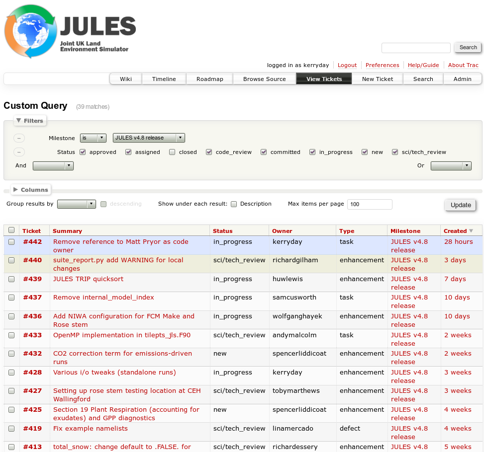To create a New Ticket, select the New Ticket button at the top
right of the page and fill in the details.
The Description will need a link to the branch before it is
passed for review.
For example [log:main/branches/dev/kerryday/vn4.8_new_tests vn4.8_new_tests]
and a Ticket Summary page [wiki:ticket/###/TicketSummary ticket summary]
These make it easier for the reviewer.
If you are only reporting a bug then please fill in as much as possible with evidence and try to find a suitable person to do the work if you are not able and Cc the JULES System Manger.
What have we covered in Practical 3?
In this section we introduced the gcylc GUI and helpful Rose and Cylc commands.
How to debug you failures using the gcylc GUI, Rose Bush or the cylc-run directory.
Using basic FCM commands.
The basics of Trac pages and Tickets.
In Practical 4 we will cover:
Checking out a JULES-Rose suite.
JULES-Rose suite structure.
Using Rosie Go.
Explore Rose Edit.
Run the JULES-Rose suite
In this practical we will use two different methods, command line and GUI's for all of the tasks.
Please try both and then chose which you prefer, but remember, you can mix and match and always change your mind!
Check out a JULES-Rose suite
We are going to checkout the JULES-Rose suite, u-ai828.
It is one from the MOSRS, the u refers to the
suite being part of the MOSRS Rosie Repository.
ai828 is a unique "number" assigned by the Rosie
Repository to the suite.
The "number" is incremental, no two suites can have the
same number, also you cannot choose the number.
rosie checkout u-ai828 # or u-ai829 for running on the VM or u-ai843 for JASMIN or u-al388 for MONSooN [INFO] u-ai828: local copy created at /USER/roses/u-ai828
JULES-Rose suite structure
The suite structure is similar for all suites.
cd /USER/roses/u-ai828 # or u-ai829 for running on the VM or u-ai843 for JASMIN or u-al388 for MONSooN ls app meta rose-suite.conf rose-suite.info suite.rc
The suite only contains plain text files, so all of the contents can be read with a text editor.
The app/ and the meta are
directories.
The rose-suite.conf, rose-suite.info
and the suite.rc are text files.
Some suites have more directories, some contain data.
There is some data in this suite, can you find it? It is Loobos data.
grep -ril loobos * | more
app/jules/file/Loobos_1997.dat
app/jules/rose-app.conf
rose-suite.info
app/jules/file/Loobos_1997.dat
We will go into each file in detail as we interact with them below in the practicals.
The command line technique is great if you know the suite ID
that you wish to checkout.
But if you do not know or cannot remember the suite ID we
can look it up based on the information in the
rose-suite.info file using Rosie Go
Rosie Go
Rosie Go is the suite browser GUI
First lets check your setup, open your
.metomi/rose.conf file, it should include
similar to the following output.
[rosie-id] prefix-username.u=MOSRS_USERNAME prefixes-ws-default=u
Now we can open Rosie Go by:
cd rosie go &
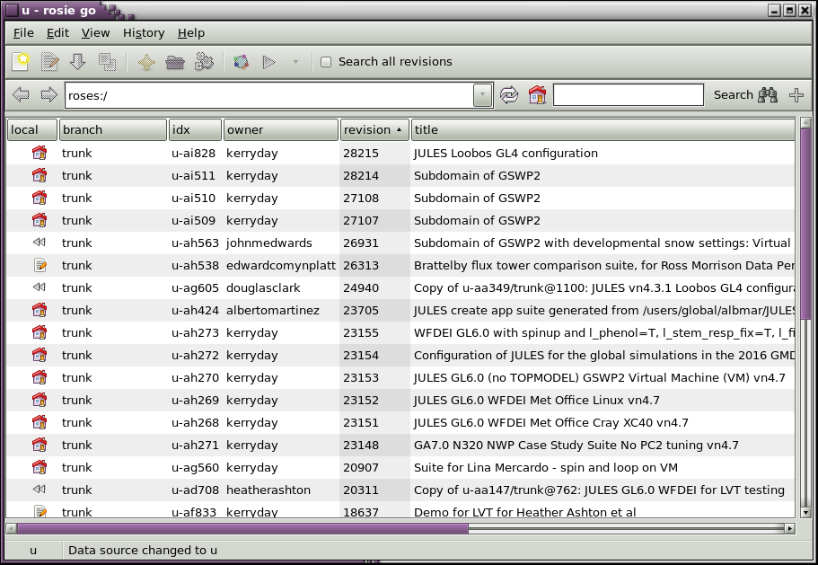
Search for all of the user "kerryday"'s suites using the search box at the top far right of the Rosie Go GUI.
Hover your mouse over each of the icons on the far left of the Rosie Go GUI and find out what each of the images mean.
Please note difference in icons etc are likely as different systems and desktops have different Apperance Preferences set.
House - Local copy
Double backwards arrow - Local copy at older revision
Notepad and pen - Local copy (modified)
You can search for anything that may be in the
rose-suite.info file and not just a user.
Right click on the suite that you are interested in.
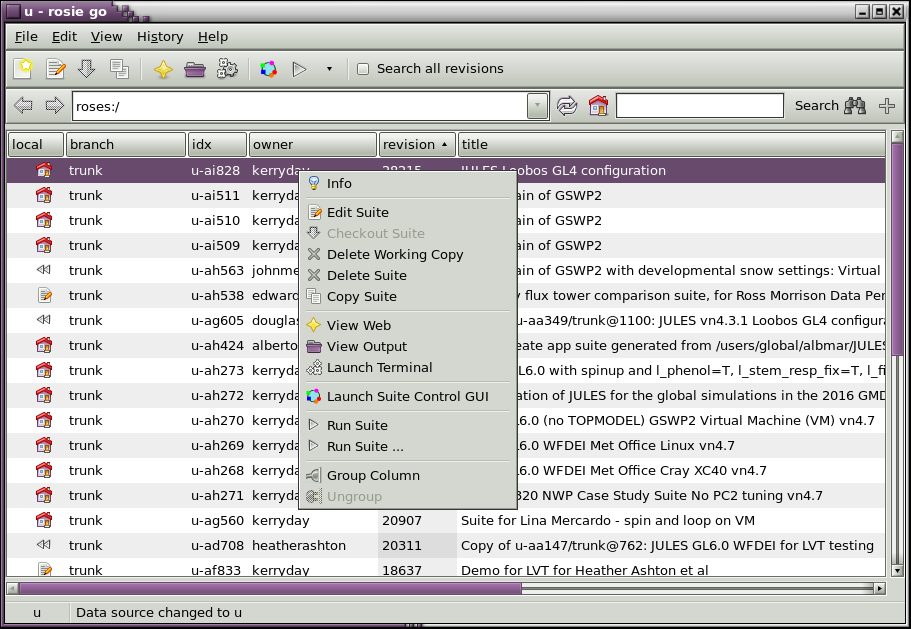Note that the Checkout Suite option is greyed
out, this is because we already have a copy.
However if we want we can chose to
Delete Working Copy and then
Checkout Suite to prove it works the same as
command line.
Notice we can do many other things from the Rosie Go GUI.
Next we will use it to open Rose Edit.
Rose Edit
There are three ways to open Rose Edit:
Click on the different items in the Index
on the left hand side of the panel of the Rose Edit GUI.
What do you notice about the items in the Index?
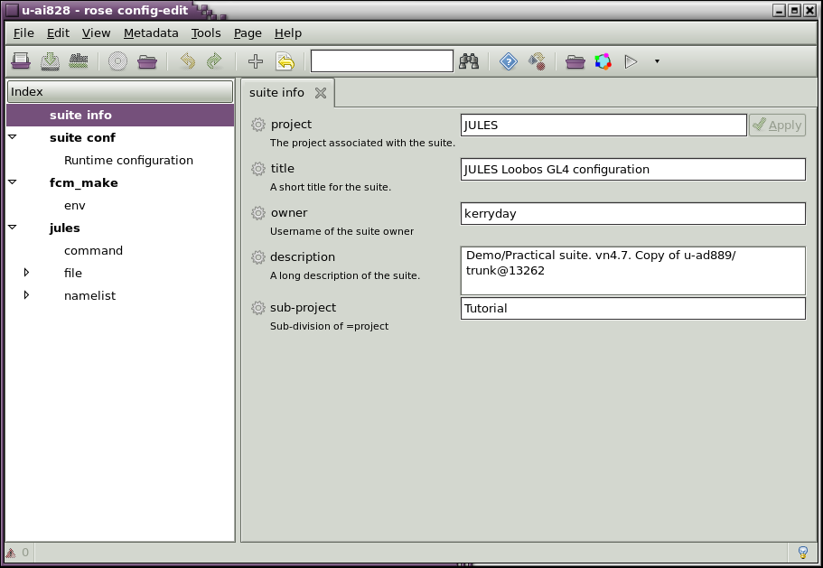
They are the same as in the command line directory.
Do not worry if you accidently change something in this suite, as you are not the owner you cannot commit your change back to the repository, so take a look around. More on changes and saving in Practical 5.
Now we are going to run the suite.
Run a JULES-Rose Suite
IF USING THE VM PLEASE USE SUITE ID u-ai829
IF USING THE JASMIN PLEASE USE SUITE ID u-ai843
IF USING THE MONSooN PLEASE USE SUITE ID u-al388
Change the path of to the JULES code in the
rose-suite.conf to point to your location of the
JULES vn4.8 code, for example on the VM: /home/vagrant/jules/vn4.8/trunk/
on JASMIN: ~<USER>/jules/vn4.8/trunk/
There are three ways to run the suite:
The gcylc GUI should look like the images below.
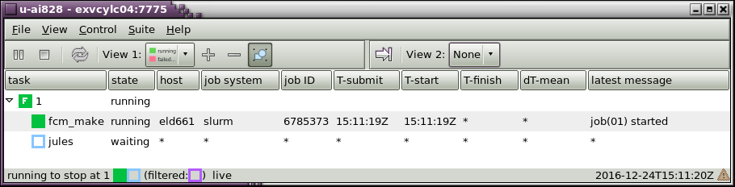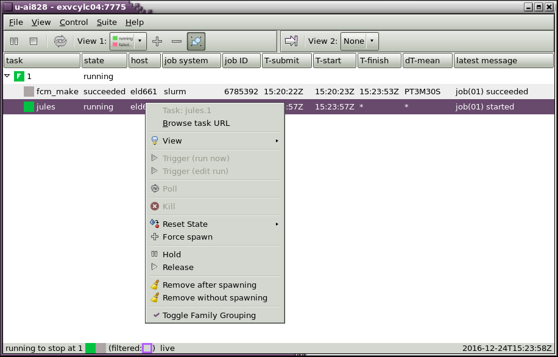
The gcylc GUI clears if the suite is successful.
With the message stopped with 'succeeded'
Congratulations you have successfully run your first JULES-Rose Suite.
In Practical 5 we will cover:
Copying a JULES-Rose suite, edit the rose-suite.info.
Change the output period, output directory location etc.
Change the spinup.
Change the soil properties.
Running the suite with a different name
Intro and background
This practical changes the soil ancillaries corresponding to a different soil type.
Soil ancillaries have an important effect on hydrology and thermodynamics. They affect sensible and latent heat fluxes that are passed back to the atmosphere.
The paper by Cosby et. al. (1984) defines a range of distinct soil types.
Please note these are not considered by all as the optimum setting but are only for example purposes here. Cosby's parameter values were valid for the USA only: for runs at other locations please consult other sources e.g. the HWSD.
The relevant parameters for a few soil types are:
Sand 'b','sathh','satcon','sm_sat','sm_crit','sm_wilt','hcap','hcon','albsoil' 3.295,0.04983,0.02455,0.3732,0.1039,0.03264,1.341E+06,0.3329,0.17
Loam 'b','sathh','satcon','sm_sat','sm_crit','sm_wilt','hcap','hcon','albsoil' 5.797,0.2383,0.004749,0.4373,0.277,0.1434,1.225E+06,0.2491,0.17
Clay 'b','sathh','satcon','sm_sat','sm_crit','sm_wilt','hcap','hcon','albsoil' 12.14,0.2864,0.001432,0.4523,0.3692,0.2696,1.244E+06,0.2192,0.17
Copy either u-ai828 (Meto) or u-ai829 (VM) or u-ai843 (JAMSIN) or u-al388 (MONSooN) and edit the rose-suite.info
Chose one of the following two options to create your copy of the suite.
Hints and Tips for using Rose Edit for making changes
The following instructions are for changes at command line, but will also help with changes in the Rose Edit GUI.
Change the output period, output directory location etc.
Change the spinup.
In the app/jules/rose-app.conf file change
[namelist:jules_spinup] max_spinup_cycles=10 nvars=1 spinup_end='1997-12-31 23:00:00' spinup_start='1996-12-31 23:00:00' terminate_on_spinup_fail=.false. tolerance=5.0 use_percent=.true. var='smcl'
Change the soil properties.
In the app/jules/rose-app.conf file change
[namelist:jules_soil_props]
const_val=3.295,0.04983,0.02455,0.3732,0.1039,0.03264,1341000.0,
=0.3329,0.17
Open the Rose Edit GUI after you have made your changes to so that the metadata checks for mistakes.
COMMIT your changes usingfcm ci
The diff from the Trac pages of the changes made to the suite.
Running the suite with a different name to the suite ID.
rose suite-run --new --name=sand_<SUITE_ID>
Check your output at:
/USER/cylc-run/sand_<SUITE_ID>/work/1/jules/sand/output/
Creating the other soil suites
We have several options now.